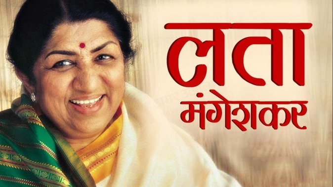

(born as Hema Mangeshkar; 28 September 1929 – 6 February 2022)

Lata Mangeshkar(1929-2022)
A Short Biography of Lata Ji...
Mangeshkar was born in a Maharashtrian Brahmin family[15] in 1929, the eldest daughter of Deenanath Mangeshkar,
Her father, Deenanath Mangeshkar, was a classical singer and theatre actor.
She sang the song "Naachu Yaa Gade, Khelu Saari Mani Haus Bhaari", which was composed by Sadashivrao Nevrekar for Vasant Joglekar's Marathi movie Kiti Hasaal (1942), but the song was dropped from the final cut.
She moved to Mumbai in 1945 when Master Vinayak's company moved its headquarters there
Mangeshkar's song "Pyar Kiya To Darna Kya" from Mughal-e-Azam (1960), composed by Naushad and lip-synced by Madhubala, still remains famous.
27 January 1963, against the backdrop of the Sino-Indian War, she sang the patriotic song "Aye Mere Watan Ke Logo"
She also sang several playback songs for Marathi films, composed by Marathi music directors
she recorded duets with Kishore Kumar, Mukesh, Manna Dey, Mahendra Kapoor and Mohammed Rafi.
In 1990 she launched her own production house for Hindi movies which produced the Gulzar-directed movie
A. R. Rahman recorded a few songs with her during this period, including "Jiya Jale" in Dil Se.., "Khamoshiyan Gungunane Lagin" in One 2 Ka 4, "
In 2001, Mangeshkar was awarded the Bharat Ratna, India's highest civilian honour.
On 28 November 2012, she launched her own music label, LM Music, with an album of bhajans, Swami Samarth Maha Mantra, composed by Mayuresh Pai.
Mangeshkar has sung 185 songs in Bengali,[6] making her debut in 1956 with the hit song "Aakash Prodeep Jwole", composed by Satinath Mukhopadhyay.
8 January 2022, Lata Mangeshkar tested positive for COVID-19 with mild symptoms and was admitted to Breach Candy Hospital's intensive care unit in Mumbai.
Mangeshkar died from multiple organ dysfunction syndrome on 6 February 2022, at the age of 92.